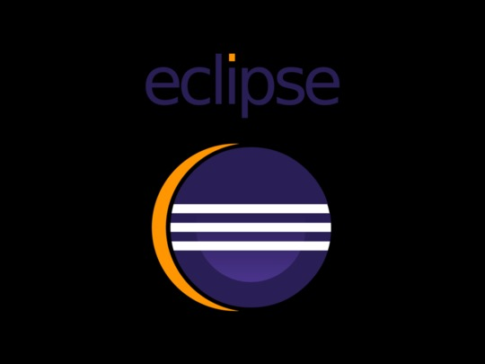

MATÉRIAS
I
O QUE APRENDEMOS.
Para o projeto Five Devs, foram utilizados
diversos recursos de software e hardware
para garantir a eficiência e qualidade do
produto final.
AULAS
Lima
Linguagem de Marcação
A unidade curricular Linguagem de Marcação visa propiciar a aquisição de capacidades básicas relativas ao layout, codificação e estilização de páginas web por meio de linguagem de marcação, bem como o desenvolvimento de capacidades socioemocionais adequadas a diferentes situações profissionais.
Fpoo
Fundamentos de Programação Orientada ao Objeto
A unidade curricular Fundamentos de Programação Orientada a Objeto visa propiciar a aquisição de capacidades básicas relativas à lógica de programação, como ferramenta para desenvolvimento de aplicações, utilizando linguagem orientada a objetos, bem como o desenvolvimento das capacidades socioemocionais adequadas a diferentes situações profissionais.


Hare
Hardware e Redes
A unidade curricular Hardware e Redes visa propiciar a aquisição de capacidades básicas relativas à preparação do ambiente de hardware e dos requisitos para funcionamento de redes de computadores, necessários para o funcionamento de sistemas computacionais, bem como o desenvolvimento de capacidades socioemocionais adequadas a diferentes situações profissionais.
.png)
SOP
Sistemas Operacionais
A unidade curricular Sistemas Operacionais visa propiciar a aquisição de capacidades básicas relativas à estrutura, funcionamento, instalação, configuração e operação de sistemas operacionais de código aberto e fechado, considerando interface gráfica e linha de comando, bem como o desenvolvimento das capacidades socioemocionais adequadas a diferentes situações profissionais.